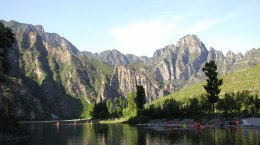

河北野三坡介绍
野三坡风景名胜区自1986年开发建设，始终坚持“科学规划、统一管理、严格保护、永续利用”的原则，倾心打造国内精品、国际知名景区。
特别是2001年实施旅游二次创业以来，我们严格按照“基础建设求实、景点建设求精、管理理念求新、服务水平求高、综合执法求严、市场开拓求稳”的发展思路，累计总投资4.15亿元，完成了百里峡景区晋档升级，开发了龙门天关、白草畔等新景区，基本完善了以水、电、路、讯为重点的基础设施，进一步规范了旅游市场经营秩序，接待能力和接待水平日益提升。
2007年共接待游客178万人次，其中接待入境游客5.8万人次，旅游综合收入3.5亿元，与2006年同比增长66.4%、93%、40%。随着旅游业的快速发展，野三坡风景区知名度和美誉度得到了迅速提升，1988年被国务院审定为国家重点风景名胜区；2001年国家旅游局将野三坡百里峡评定为4A级旅游区，同年被中华环保基金会确定为生态旅游示范区；2004年1月被国土资源部批准为国家地质公园，11月被国家林业局批准为国家森林公园；特别是近三年以来，野三坡进一步加大基础设施建设力度，进一步优化景区环境，提升景区管理服务水平，2005年龙门天关、白草畔景区双双被评定为4A级旅游区，同年被河北省人民政府授予消防工作先进单位称号；2006年1月被中央文明办、建设部、国家旅游局评定为全国创建文明风景旅游区工作先进单位，9月又被联合国教科文组织评定为世界地质公园；2007年8月被河北省精神文明建设委员会确定为“引领文明、服务奥运”示范单位，10月被河北省旅游局评选为百姓最喜爱的河北魅力景区，11月被国家建设部评定为国家级风景名胜区综合整治优秀单位。
上一篇：北戴河介绍 下一篇：白洋淀介绍